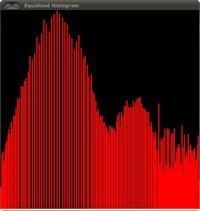

Histogram Equalization
Goal
In this tutorial you will learn:
- What an image histogram is and why it is useful
- To equalize histograms of images by using the OpenCV function cv::equalizeHist
Theory
What is an Image Histogram?
- It is a graphical representation of the intensity distribution of an image.
- It quantifies the number of pixels for each intensity value considered.

What is Histogram Equalization?
- It is a method that improves the contrast in an image, in order to stretch out the intensity range.
- To make it clearer, from the image above, you can see that the pixels seem clustered around the middle of the available range of intensities. What Histogram Equalization does is to stretch out this range. Take a look at the figure below: The green circles indicate the underpopulated intensities. After applying the equalization, we get an histogram like the figure in the center. The resulting image is shown in the picture at right.
How does it work?
Equalization implies mapping one distribution (the given histogram) to another distribution (a wider and more uniform distribution of intensity values) so the intensity values are spreaded over the whole range.
To accomplish the equalization effect, the remapping should be the cumulative distribution function (cdf) (more details, refer to Learning OpenCV). For the histogram \(H(i)\), its cumulative distribution \(H^{'}(i)\) is:
\[H^{'}(i) = \sum_{0 \le j < i} H(j)\]To use this as a remapping function, we have to normalize \(H^{'}(i)\) such that the maximum value is 255 ( or the maximum value for the intensity of the image ). From the example above, the cumulative function is:

Finally, we use a simple remapping procedure to obtain the intensity values of the equalized image:
\[equalized( x, y ) = H^{'}( src(x,y) )\]
Code
What does this program do?
- Loads an image
- Convert the original image to grayscale
- Equalize the Histogram by using the OpenCV function cv::equalizeHist
- Display the source and equalized images in a window.
Downloadable code : Click here
Code at glance:
#include "opencv2/imgcodecs.hpp" #include "opencv2/highgui.hpp" #include "opencv2/imgproc.hpp" #include <iostream> using namespace cv; using namespace std; int main( int, char** argv ) { Mat src, dst; const char* source_window = "Source image"; const char* equalized_window = "Equalized Image"; src = imread( argv[1], IMREAD_COLOR ); if( src.empty() ) { cout<<"Usage: ./EqualizeHist_Demo <path_to_image>"<<endl; return -1; } cvtColor( src, src, COLOR_BGR2GRAY ); equalizeHist( src, dst ); namedWindow( source_window, WINDOW_AUTOSIZE ); namedWindow( equalized_window, WINDOW_AUTOSIZE ); imshow( source_window, src ); imshow( equalized_window, dst ); waitKey(0); return 0; }
Explanation
Declare the source and destination images as well as the windows names:
Mat src, dst; char* source_window = "Source image"; char* equalized_window = "Equalized Image";
Load the source image:
src = imread( argv[1], 1 ); if( !src.data ) { cout<<"Usage: ./Histogram_Demo <path_to_image>"<<endl; return -1;}
Convert it to grayscale:
cvtColor( src, src, COLOR_BGR2GRAY );
Apply histogram equalization with the function cv::equalizeHist :
equalizeHist( src, dst );
As it can be easily seen, the only arguments are the original image and the output (equalized) image.
Display both images (original and equalized) :
namedWindow( source_window, WINDOW_AUTOSIZE ); namedWindow( equalized_window, WINDOW_AUTOSIZE ); imshow( source_window, src ); imshow( equalized_window, dst );
Wait until user exists the program
waitKey(0); return 0;
Results
To appreciate better the results of equalization, let’s introduce an image with not much contrast, such as:

which, by the way, has this histogram:

notice that the pixels are clustered around the center of the histogram.
After applying the equalization with our program, we get this result:

this image has certainly more contrast. Check out its new histogram like this:
Notice how the number of pixels is more distributed through the intensity range.
Are you wondering how did we draw the Histogram figures shown above? Check out the following tutorial!